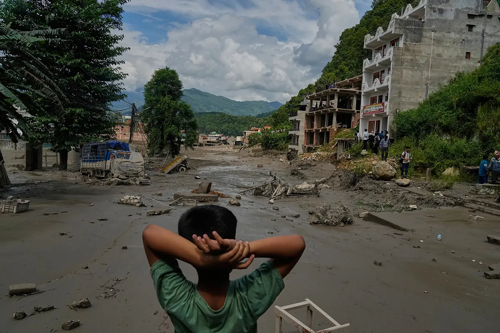
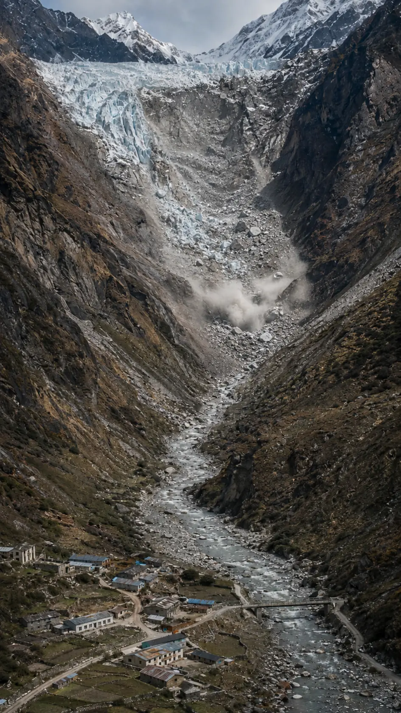
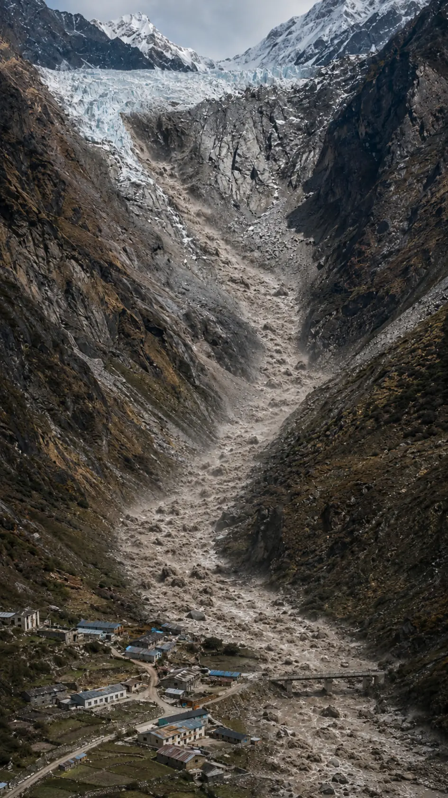
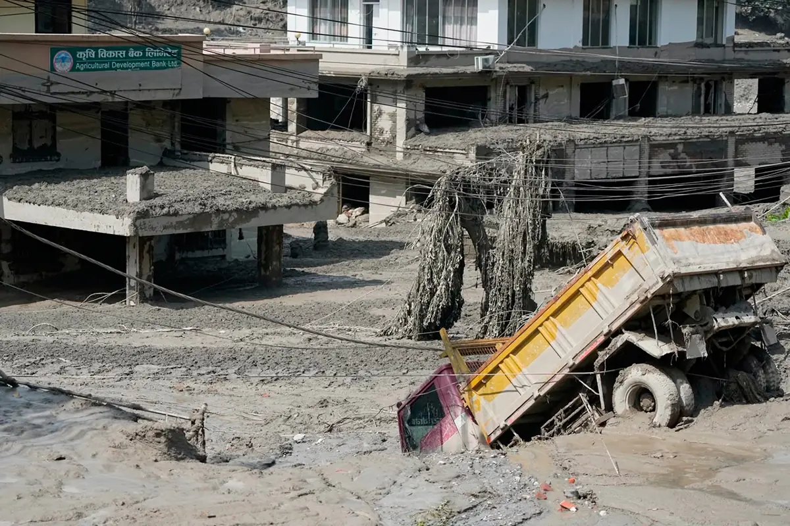
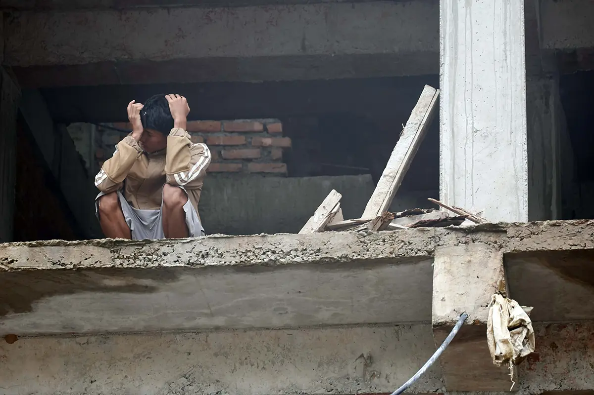
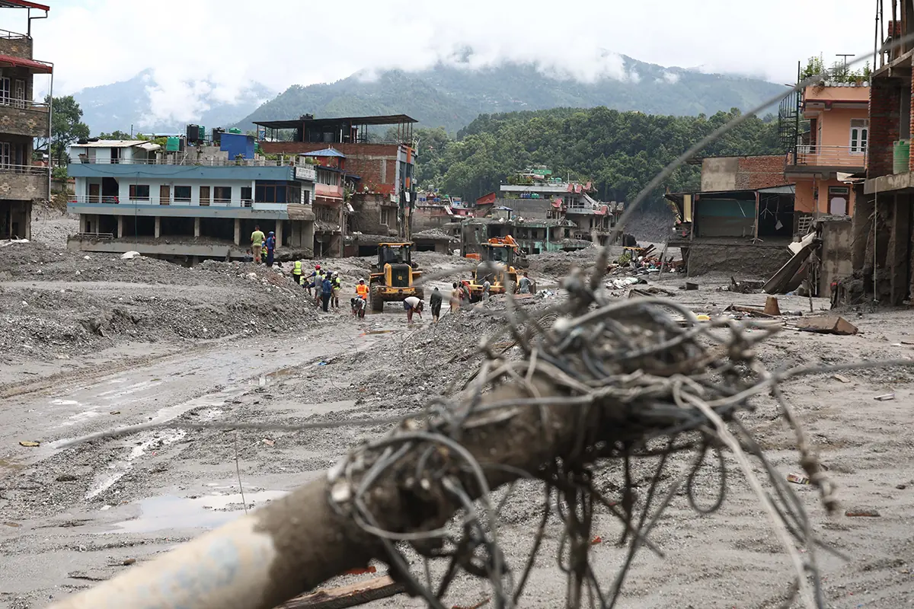

빨라진 히말라야
빙하 손실
2000~2016년 연평균 손실량 · 1975~2000년 대비
Science Advances · 2019
큰 비가 직접 원인은 아니었던 날,
빙하·암석 붕괴가 삶의 터전을 덮쳤다.


빙하와 암석, 그 아래로 이어지는 물길.
붕괴와 홍수를 이해하기 위한 설명용 장면이다.
이해를 돕는 재현입니다. 실제 지형·시간과 다르며, 세부 발생 과정은 조사 중입니다.
빙하·암석 붕괴에서 하류의 피해까지.
TV뉴시스 영상으로 당시 상황을 짚어본다.
세부 발생 과정은 이후 조사에 따라 달라질 수 있다.

물은 토사와 바위를 품은 채 강을 따라 내려가며
하천 주변 가옥과 학교 등 하류의 피해를 키웠다.
2000~2016년 연평균 손실량 · 1975~2000년 대비
Science Advances · 2019현재 배출 경로가 이어질 경우 · 2100년 전망
ICIMOD HI-WISE · 2023폭우 예보는 받았지만 눈사태·수위·산사태 등은
공유되지 않았다고 네팔 당국자는 주장했다.
중국은 양국이 긴밀히 협력해 왔다며
외딴 고산지대의 재해 감시는 어렵다고 반박했다.
협력 부족이 이번 대응의 결정적 원인은 아니지만,
네팔은 10분 단위 정보 공유 협정을 제안할 계획이다.
이번 재난의 책임을 어느 한쪽에 돌릴 근거는 없습니다.
관측 사각지대와 국경 간 정보 공유 체계를 보완하는 일이 남았습니다.
해당 붕괴 지역은 평소 관측이 드물고, 붕괴를 사전에 탐지하기도 매우 어려운 곳입니다.


물길이 잦아든 뒤에도 집과 일터,
공동체를 되찾는 긴 시간이 이어진다.
관측비뿐 아니라 빙하와 산의 움직임까지
공유국경을 넘는 관측정보를 더 빠르게
대비경보와 대피, 위험 물길의 시설까지
다음 재난을 줄이는 준비는
무너지기 전부터.
위성자료와 지진파 분석에서는 기반암과 빙하·암석의 대규모 붕괴가 확인됐습니다.
처음 지진으로 해석된 진동은 붕괴가 만든 신호로 정정됐습니다.
AI 이미지는 붕괴와 홍수의 흐름을 이해하기 위한 설명용입니다.
실제 영상이나 시뮬레이션이 아니며, 지형·규모·시간 간격을 그대로 재현하지 않았습니다.
붕괴의 직접 원인과 강물이 급증한 세부 과정은 조사 중입니다.
화면의 단계는 확정된 사건 순서를 뜻하지 않습니다.
온난화의 배경 위험과 이번 붕괴의 직접 원인을 구분했습니다.
정보 공유를 둘러싼 양국 주장도 피해의 원인으로 단정하지 않았습니다.